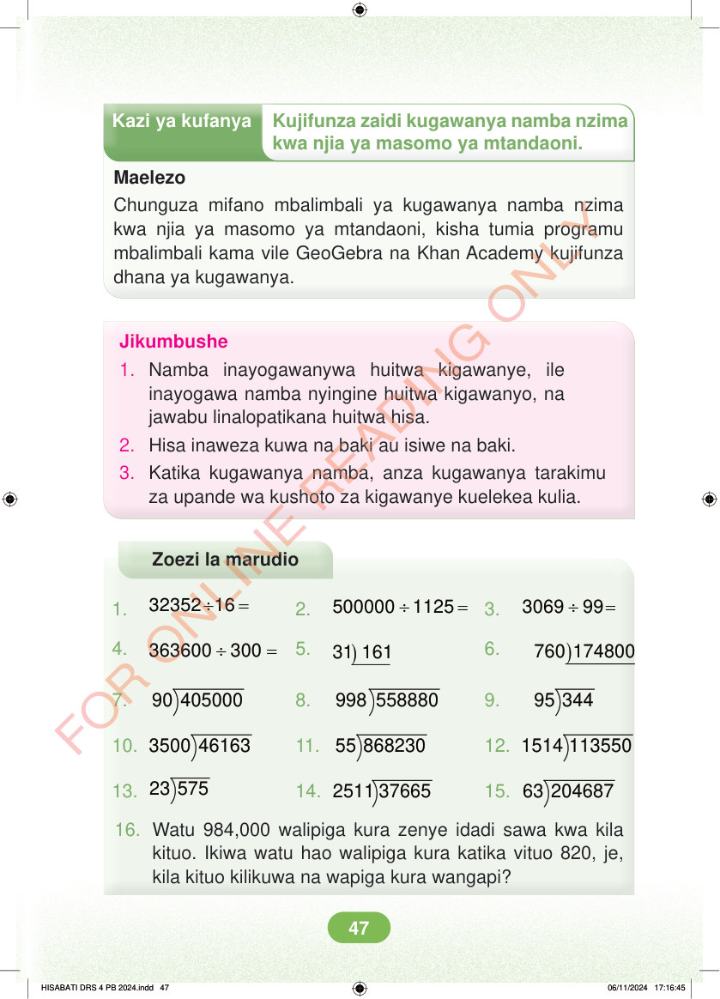

<!DOCTYPE html>
<html lang="sw-TZ"><head><meta charset="utf-8"><meta name="viewport" content="width=device-width,initial-scale=1">
<title>Hisabati: Kitabu cha Mwanafunzi Darasa la Nne</title>
<meta name="title-id" content="pg053_sec001"><meta name="page-section-id" content="55">
<link href="./content/tailwind_output.css" rel="stylesheet"><link href="./assets/libs/fontawesome/css/all.min.css" rel="stylesheet"><link href="./assets/fonts.css" rel="stylesheet">
<style>body{margin:0;background:#eef1ed}main{width:100%;display:flex;justify-content:center;padding:1rem 1rem 5rem;box-sizing:border-box}#content{width:100%;display:flex;justify-content:center}.pdf-page{position:relative;width:min(calc(100vw - 2rem),56rem);aspect-ratio:540.8980102539062/750.6610107421875;background:white;box-shadow:0 4px 24px #0002;overflow:hidden}.pdf-page img{position:absolute;inset:0;width:100%;height:100%;object-fit:fill}</style>
</head><body><main><h1 class="sr-only" id="page-heading">Ukurasa wa 53</h1><div id="content" class="opacity-0"><section role="article" data-section-type="pdf_accessible_page" data-section-id="pg053_sec001" aria-labelledby="page-heading" class="pdf-page"><p class="sr-only" data-id="pg053_gp001_tx001">Kazi ya kufanya Kujifunza zaidi kugawanya namba nzima kwa njia ya masomo ya mtandaoni. Maelezo Chunguza mifano mbalimbali ya kugawanya namba nzima kwa njia ya masomo ya mtandaoni, kisha tumia programu mbalimbali kama vile GeoGebra na Khan Academy kujifunza dhana ya kugawanya. Jikumbushe 1. Namba inayogawanywa huitwa kigawanye, ile inayogawa namba nyingine huitwa kigawanyo, na jawabu linalopatikana huitwa hisa. 2. Hisa inaweza kuwa na baki au isiwe na baki. 3. Katika kugawanya namba, anza kugawanya tarakimu za upande wa kushoto za kigawanye kuelekea kulia. Zoezi la marudio 1. ÷ = 32352 16 2. ÷ = 500000 1125 3. ÷ = 3069 99 4. ÷ = 363600 300 5. ) 31 161 6. ) 760 174800 7. 90 405000 8. 998 558880 9. 95 344 10. 3500 46163 11. 55 868230 12. 1514 113550 13. 23 575 14. 2511 37665 15. 63 204687 16. Watu 984,000 walipiga kura zenye idadi sawa kwa kila kituo. Ikiwa watu hao walipiga kura katika vituo 820, je, kila kituo kilikuwa na wapiga kura wangapi? HISABATI DRS 4 PB 2024.indd 47 HISABATI DRS 4 PB 2024.indd 47 06/11/2024 17:16:45 06/11/2024 17:16:45</p></section></div></main><div class="relative z-50" id="interface-container"></div><div class="relative z-50" id="nav-container"></div><script src="./assets/offline-preloader.js?v=audiofix-20260824-1"></script><script src="./assets/scorm.js"></script><script src="./assets/base.bundle.local.js?v=audiofix-20260824-1"></script></body></html>